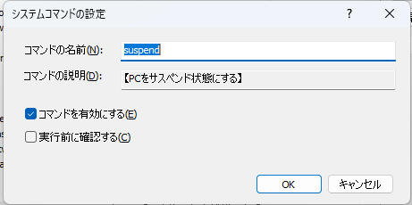

システムコマンド
概要
システムコマンドとは、本アプリに最初から登録済のキーワードのこと。
削除することはできないが、名前を変更することはできる。
また、一部のコマンドについては無効化することができる。
無効化すると、入力画面でキーワードを入力しても候補として表示されず実行もできなくなる。
名前の変更や無効化はキーワードマネージャで設定することができる。
cd
実行中のランチャーアプリプロセスのカレントディレクトリを変更する
copyclip
コマンド名の後に指定した文字列をクリップボードにコピーする
delete
コマンドを削除する。
例:
delete hoge→ hogeコマンドを削除する
displayoff
モニター(ディスプレイ)の電源を切る。
マルチモニター環境の場合、すべての電源を切る。
edit
既存コマンドの編集画面またはキーワードマネージャ画面を表示する
後続パラメータにコマンド名を表示を指定した場合、そのコマンドの編集画面を表示する。
後続パラメータとして何も指定しなかった場合はキーワードマネージャ画面を表示する。
例
edit hoge→hogeコマンドの設定画面を表示するedit→ キーワードマネージャ画面を表示する
emptyrecyclebin
ごみ箱を空にする。
コマンド設定にて、空にする前の確認の有無を設定することができる。(初期状態は確認なし)
exit
本アプリを終了する。
lockscreen
スクリーンロックする。
logoff
Windowsからログオフ(サインアウト)する。
maindir
本アプリの実行ファイルが置かれているフォルダをエクスプローラーまたはファイラーで表示する。
アプリケーション設定 で外部ファイラーを設定している場合は外部ファイラーで開く。
設定していない場合はエクスプローラーで開く。
manager
キーワードマネージャ画面を表示する。
new
新規コマンド登録画面を表示する。
newsnippet
現在クリップボードにあるテキストを定型文として登録するための登録画面を表示する。
reboot
PCを再起動する。
registwin
直前にアクティブなウインドウをコマンドとして登録する。
reload
設定ファイルの再読み込みを行う。
(テキストエディタで直接キーワード編集を行ったときにリロードするためもの)
当アプリの初期のバージョンではコマンド編集のためのUIを実装していなかったため、その頃の名残として存在しているものであるが、現在は使う必要はない。
restart
アプリの再起動を行う。
初期状態では無効になっている。キーワードマネージャのコマンド設定画面から有効にすると使用できる。
setting
アプリケーション設定画面を表示する。
shutdown
システムをシャットダウンする。
standby
PCをスタンバイ状態にする。
suspend
PCをサスペンド状態にする。
userdir
設定ファイルの保存先フォルダをエクスプローラーまたはファイラーで表示する。
アプリケーション設定 で外部ファイラーを設定している場合は外部ファイラーで開く。
設定していない場合はエクスプローラーで開く。
設定ファイルの保存先については アプリデータの保存フォルダ を参照のこと
version
バージョン情報ダイアログを表示する
システムコマンドの編集
一部のシステムコマンドは機能を無効化することができる。
無効化すると、入力欄にコマンド名を入力しても候補として表示されなくなる。
キーワードマネージャ上でシステムコマンドを選択し、編集ボタンを選択すると下記の画面が表示される。

コマンドの名前コマンドの名前を変更することができる
コマンドの説明コマンドの機能を説明するテキスト。読み取り専用。
コマンドを有効にするチェックを外すと、当該コマンドが候補欄に表示されなくなる(実行もできない)
実行前に確認するチェックすると、コマンド実行前に確認ダイアログを表示する。
誤って実行されるのを防止するための機能